Kawai, Nara: things to do, food and stays
Kawai · Nara
Kawai
Highlighted on the Nara map.
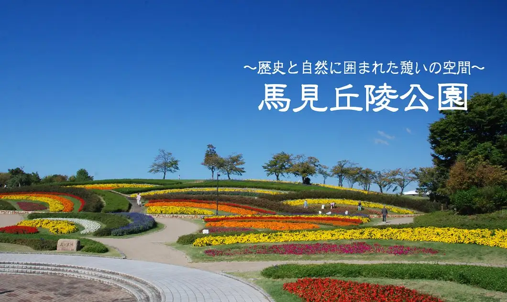
Stay
No bookable places to stay found in Kawai — nearest options in Oji.
Dining
中国料理M
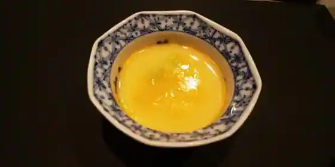
Chugokuryori M
ほうらい
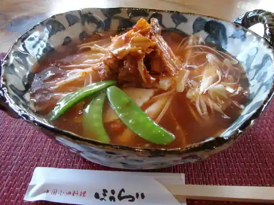
Horai
ドルチェカンパーニャ 西大和学園前店
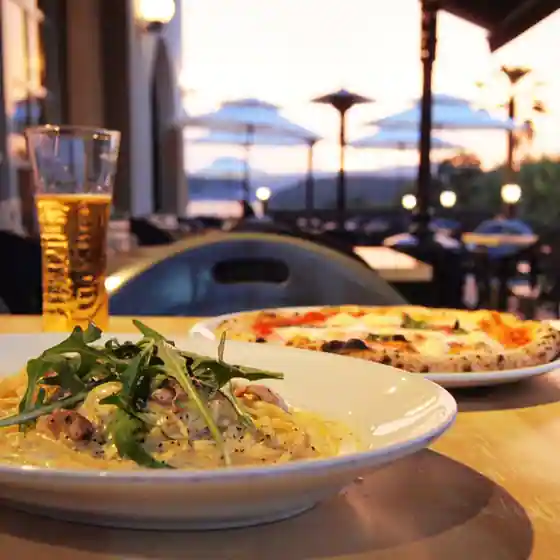
Doruchekanpanya Nishi Yamato Gakuen Mae
寿しの喜多八
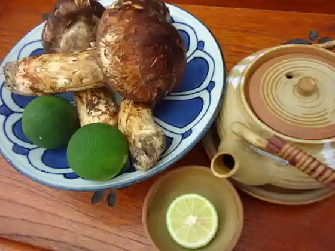
Hisashi Shino Kitahachi
Secret Base JO-9, cafe
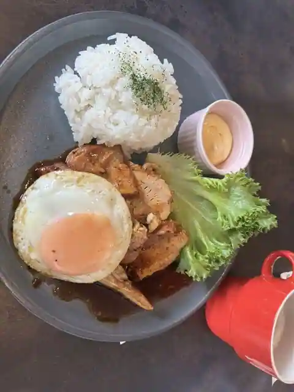
Secret Base JO-9, cafe
ペペローニ
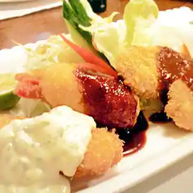
Peperoni
町田商店 法隆寺店
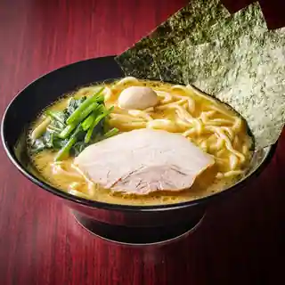
Machida Sho Horyuji
+ｆ
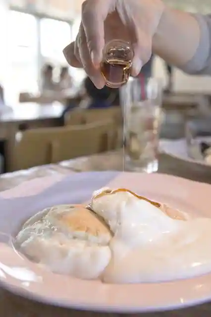
+f
邂逅
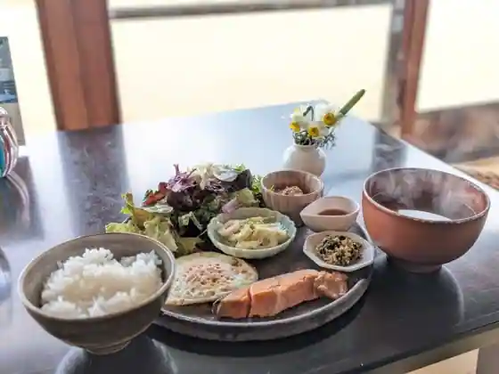
Kaiko
パラダイス バーガーズ
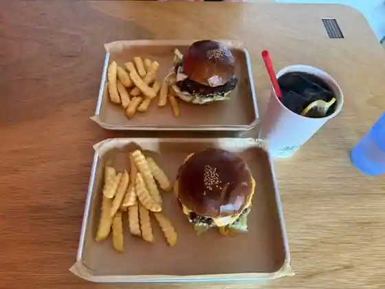
Paradaisu Burger Zu
油そば 松風
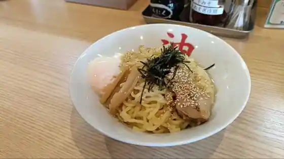
Abura Soba Matsukaze
TRICO
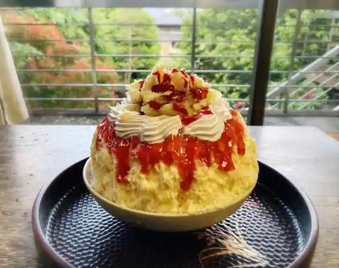
TRICO
パティスリーアドゥマン
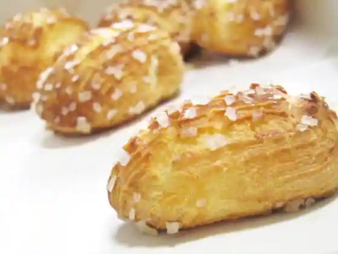
Pateisuriadouman
タヴェルナ イルチリエージョ
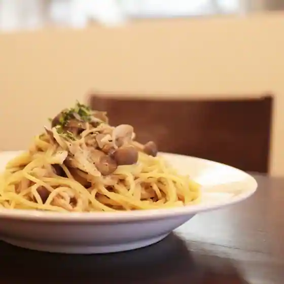
Taveruna Iruchiriejo
旬のお料理 桜
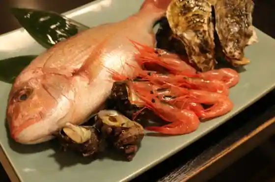
Jun No Ryori Sakura
西大和 さえき
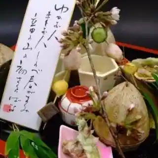
Nishi Yamato Saeki
塩元帥 法隆寺店
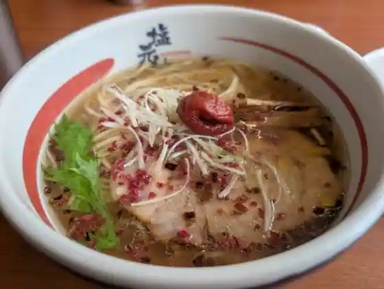
Shio Gensui Horyuji
キャパトル 西大和店
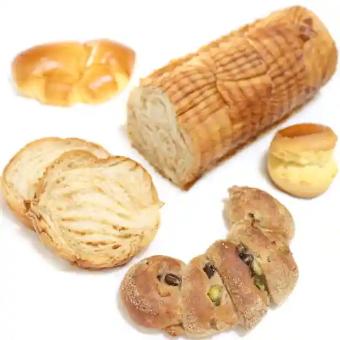
Kyapatoru Nishi Yamato
太鼓たこ
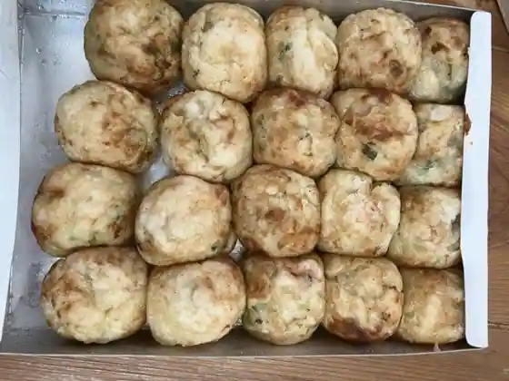
Taiko Tako
オリジン
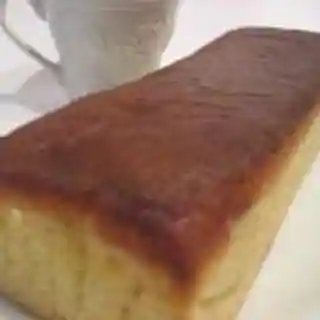
Orijin
鮨 いぶき
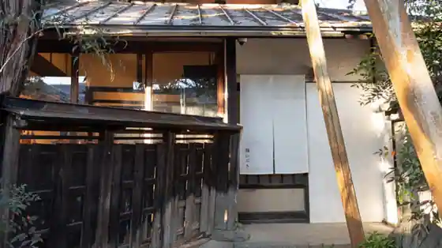
Sushi Ibuki
モンシェリー
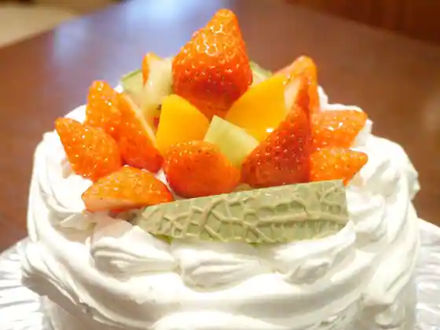
Monshieri
旬薬ゼン みんカフェ
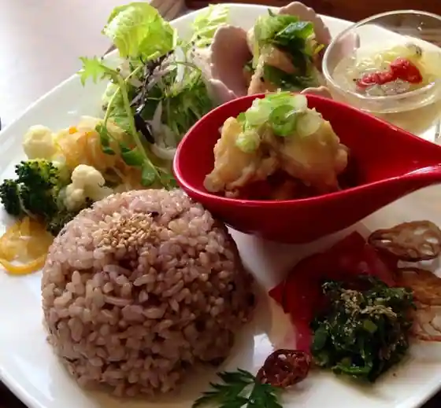
Jun Kusuri Zen Min Cafe
ドッグカフェ メイプル
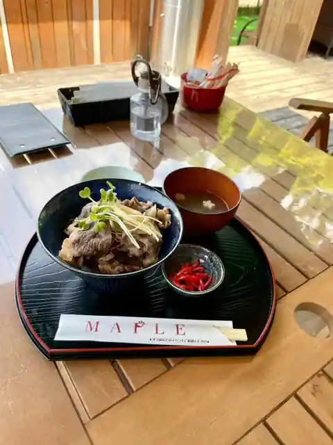
Doggu Cafe Meipuru
Sights
Naraken Ei Umami Kyuryo Park
Hirose Taisha
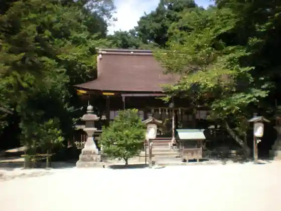